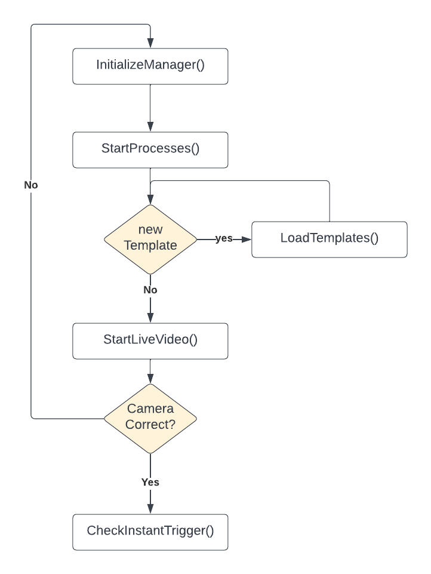

Usage
Make sure the Getting Started has been completed
Common usage
The main usage methodology of the template matching functions is to call the checkInstantTrigger(data) method. This method returns the results of template matching between the current frame and the list of templates sent to the functon.
Basic Setup
The Template matching necessitates of two things, a set of templates and a frame where to search for those frame. The frame is actually grabbed by a USB camera (more supports comes in future releases) but the frame must be defined and placed carefully by the user.
The frame folder must be decided a priori and setted in the application by an API call
SETTING_URL = "http://localhost:7386/api/v1/setting"
def set_setting(name, value):
url = f"{SETTING_URL}"
data = {
"name": name,
"value": value
}
response = requests.post(url, json=data)
return response.json()
set_setting("template_folder", "PATH_TO_YOUR_TEMPLATE")
in this snipped we make an API call to the setting endpoint to set the template_folder path.
!!! Make sure to replate PATH_TO_YOUR_TEMPLATE with the correct template path folder, using slash (/) or double backslash (\) to separate folders !!!
Now that we have configured the template folder, we need to fill it with templates. We need to follow specific rules:
- format: the format must be .jpg
- size: the templte must be extracted from a frame of the same resolution used then by the camera (i.e., camera resolution 1080p, template cutted froom a frame with resolution 1920x1080)
- name: the name of the template (without its extension) will be used by the appliation and also by the user when need to chose which templates to match. (use reasonable name!)
Initialization
Before to make any function call to the actual template matching, an initialization procedure must be followed and it's as depicted in the following diagram:
where each function can be reached from the following enpoint
-
InitializeManager(): ./api/v1/tm/init -
StartProcesses(): ./api/v1/tm/startprocesses -
LoadTemplates(): ./api/v1/tm/loadtemplate -
StartLiveVideo(): ./api/v1/tm/startvideo -
CheckInstantTrigger(): ./api/v1/tm/check/instant

In the exemple below we follow the exact path depicted by the image.
- first we define all the methods that do API calls
- then we use the methods at the end of the snippet:
- first initialize the manager
- if templates are added or removed from the template folder after manager initialization, call loadTemplates()
- then start the multiprocess execution pool (not needed if multiprocess flag is False)
- start a live video from camera to check if selected index is correct, if not, re-call all the previous by changing index in the initialization method.
- Assuming that all is correct up to now, create a list of template name (without the extension .jpg) and pass to the CheckInstantTrigger() method
N.B.
- This Snippet is a standalone snippet and if __name__ == "__main__" could be necessary depending on various factor
- All type and data structures definitions can be found at API reference (redoc format) or at FASTAPI docs (fastapi format)
Python Example
This example show a basic usage of what explained above
import requests
# Define the base URL for the API
BASE_URL = "http://localhost:7386/api/v1/tm"
# Initialize the Manager with the desired settings
def initialize_manager():
url = f"{BASE_URL}/init"
data = {
"processNumber": 4,
"resolution": (1920, 1080),
"multiprocess": True,
"camIndex": 0,
"showImage": False,
"saveFrame": True,
"showImageGray": False
}
response = requests.post(url, json=data)
return response.json()
# Start the Processes
def start_processes():
url = f"{BASE_URL}/startprocesses"
response = requests.get(url)
return response.json()
# Load the Templates
def load_templates():
url = f"{BASE_URL}/loadtemplate"
response = requests.get(url)
return response.json()
# Start Live Video
def start_live_video():
url = f"{BASE_URL}/startvideo"
response = requests.get(url)
return response.json()
# Check Instant Trigger
def check_instant_trigger(templates):
url = f"{BASE_URL}/check/instant"
data = {"templates": templates}
response = requests.post(url, json=data)
return response.json()
# Example sequence of API calls following the flowchart
if __name__ == "__main__":
# Initialize the Manager
init_response = initialize_manager()
print("Initialize Manager:", init_response)
# Decide if new templates need to be loaded based on some condition
# This is just an example condition; replace with your actual logic
new_template_condition = True
if new_template_condition:
# Load Templates
load_templates_response = load_templates()
print("Load Templates:", load_templates_response)
# Start Processes
start_processes_response = start_processes()
print("Start Processes:", start_processes_response)
# Start Live Video
start_live_video_response = start_live_video()
print("Start Live Video:", start_live_video_response)
# Here you would have your logic to check if the camera is correct
# Assuming the camera is correct, we proceed to check the instant trigger
camera_correct = True
if camera_correct:
# Check Instant Trigger with a list of template names
templates_to_check = ["template1", "template2"]
check_instant_trigger_response = check_instant_trigger(templates_to_check)
print("Check Instant Trigger:", check_instant_trigger_response)